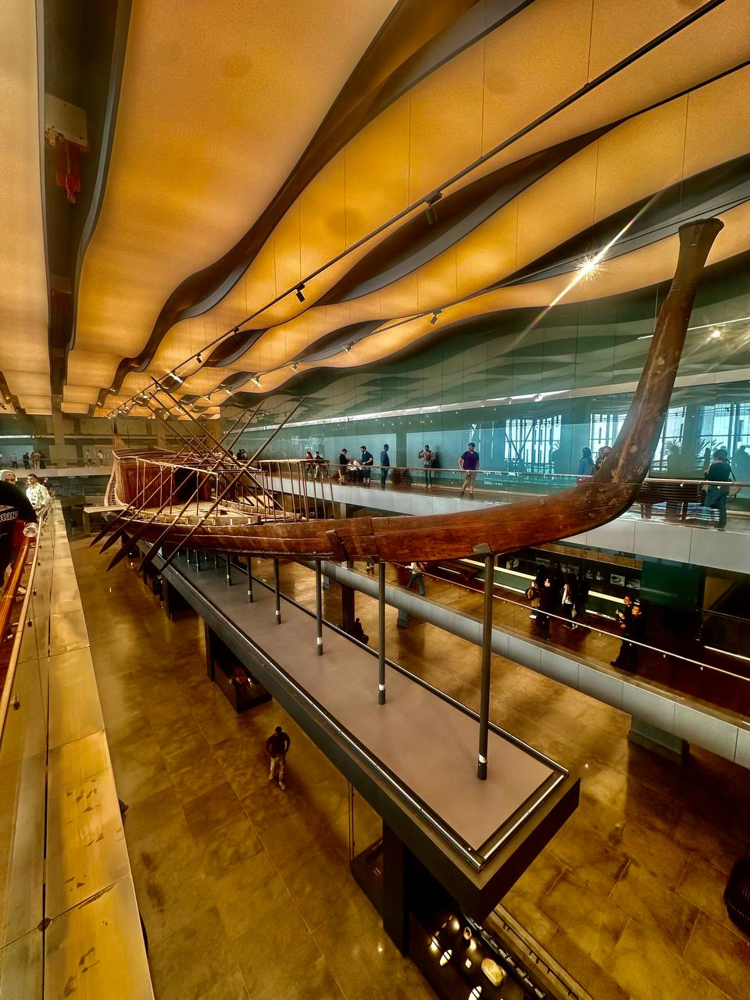

The world's oldest intact ship — built 4,600 years ago to carry a pharaoh across the heavens
Built around 2500 BC for the pharaoh Khufu — the builder of the Great Pyramid — the Solar Boat is the oldest intact ship in the world. A 43.4-metre vessel of Lebanon cedar, assembled without a single metal nail.
On May 26, 1954, Egyptian archaeologist Kamal el-Mallakh uncovered a sealed limestone pit on the south side of the Great Pyramid. Drilling a small hole through one of the massive blocks, he lowered a mirror and caught the first glimpse of 1,224 wooden pieces — carefully dismantled, methodically arranged, and preserved untouched for nearly 4,500 years. A faint scent of ancient cedar still rose from the chamber.
The reassembly fell to master restorer Ahmed Youssef Moustafa, who spent more than a decade studying ancient boat reliefs and traditional Nile shipwrights to understand how the vessel was built. The ship uses a shell-first construction method: planks of cedar joined by mortise-and-tenon joints of Christ's-thorn wood, then lashed together with ropes of halfa grass. It has been called a masterpiece of woodcraft — so well made that experts say it could sail today if placed in water.
Called a solar barque, the boat was built to carry the resurrected king across the sky with the sun god Ra, rising at dawn and descending through the underworld at night. Whether it ever touched the Nile is debated; some traces suggest it may have served as a funerary vessel to carry Khufu's body to Giza before being dismantled and buried. In August 2021, after forty years in a small museum beside the pyramid, the 20-ton ship was transferred on a remote-controlled shock-absorbing vehicle to its permanent home at the Grand Egyptian Museum.
A masterpiece of woodcraft — so well made it could sail today.
— On the Khufu ship, the world's oldest intact vessel